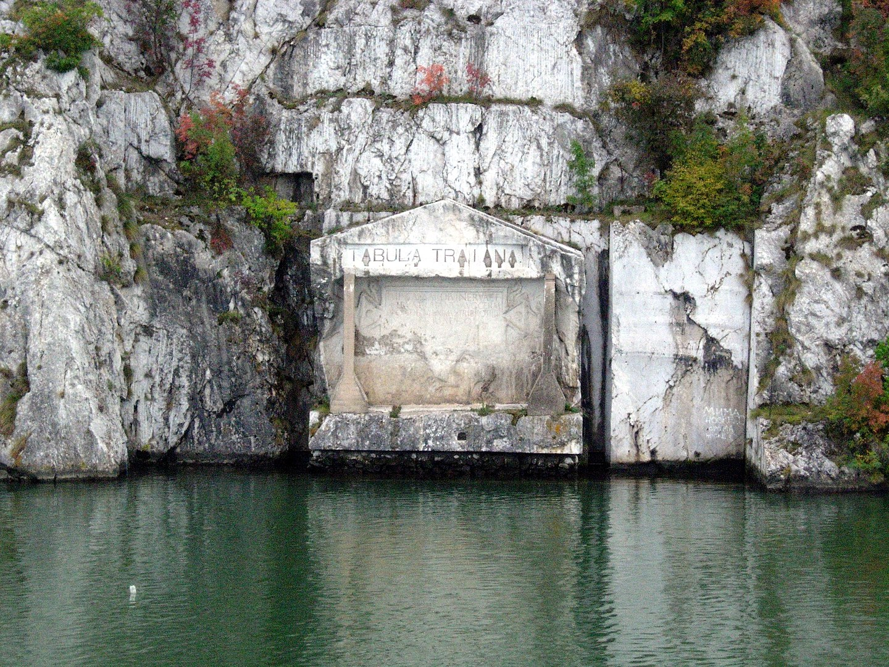

Descriere
Chipul lui Decebal, o operă de artă de mărimi impresionante este încadrată într-un peisaj de vis! Aici, frumuseţea naturii a rămas neatinsă de sute de ani, iar Munţii Carpaţi întâlnesc Dunărea. Sculptura concurează de departe cu Statuia Libertăţii din SUA – ca şi înălţime – şi cu sculpturile de pe Muntele Rushmore – ca timp de lucru şi muncă în echipă. Chipul regelui dac Decebal este un basorelief înalt de 55 m, aflat pe malul stâncos al Dunării, între localităţile Eşelniţa şi Dubova, în apropiere de oraşul Orşova, România. Basorelieful îl reprezintă pe Decebal, ultimul rege al Daciei, şi este sculptat într-o stâncă de către sculptorul Florin Cotarcea, din oraşul Orşova. El a lucrat timp de zece ani în care a fost ajutat de 11 alpinişti. Este cea mai înaltă sculptură în piatră din Europa şi a doua din lume! Omul de afaceri şi istoricul amator protocronist Iosif Constantin Drăgan a fost cel care a promovat şi finanţat ideea acestei lucrări efectuate în perioada 1994 – 2004. Prin modelarea acestui chip în munte, Iosif Constantin Dră gan a dorit să comemoreze, dar să şi demonstreze contribuţia românilor la formarea culturilor europene, pornind de la premisa că identitatea culturală a românilor poate fi definită în primul rând prin componenţa sa daco-tracă. Sub capul lui Decebal se găseşte o inscripţie în latină, săpată în stâncă – DECEBAL REX – DRAGAN FECIT (Regele Decebal – făcută de Drăgan).
Sculptura completează un peisaj mirific acolo unde Dunărea parcă fierbe în cazane.Vegetaţia contribuie la crearea unor imagini superbe când de un verde intens, când ruginite din cauza toamnei. E fascinant să-i admiri statura impunătoare, și asta datorită unor oameni care-au trudit cu pasiune și dăruire timp de un deceniu pentru ridicarea sa! O pagină din istoria națională, sculptată în piatră într-un paradis natural: acesta este Chipul lui Decebal !
Chiar în fața basoreliefului, dar pe malul sârbesc, se găsește de aproape 2000 ani o placă memorială antică ("Tabula Traiana"), având 4 metri lungime și 1,75 metri înălțime, monument ridicat de adversarul regelui Decebal, împăratul roman Traian, pentru a marca marșul trupelor imperiale romane spre Dacia și a comemora victoriile Imperiului Roman asupra regatului dac în Războiul din 105-106, dar și finalizarea drumului militar roman al lui Traian.